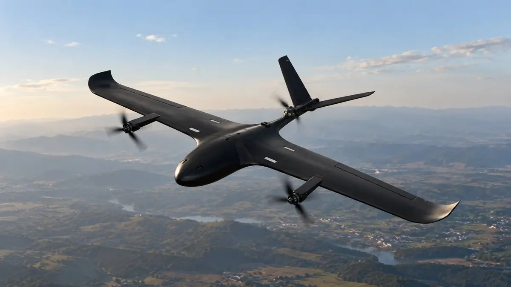

Home / Problems We Solve / Too much ground, too few eyes
SecurityBorder and perimeter surveillance: too much ground, too few eyes
Borders, pipelines and large sites are too long to cover on foot or from fixed posts alone.
Why do large perimeters leave surveillance gaps?
A patrol can only see what is in front of it, and a fixed post only what is in its line of sight. On a long border or a large site, that leaves gaps, and by the time a report arrives, the moment has often passed.
Fixed cameras see only what is in their line of sight, and patrols see only what is near them. On a border, pipeline or large campus, the stretches between them can go unwatched for hours.
A long-range drone changes the geometry. One aircraft can move along the whole line and send live video back, so people are sent only where something has actually been seen.
Signs you have this problem
- Patrols take hours to complete one round of the site
- Hills, forest or water block your cameras’ view
- Reports of an incident arrive after it is over
- Covering more ground would mean adding many more people
What to look for
- Range and endurance that match the length of your route
- Vertical take-off if you have no runway or launcher
- EO/IR payload for day and night viewing
- Encrypted video and automated patrol routes
The main causes
Distance
Long borders, pipelines and perimeters take hours to cover on the ground.
Terrain
Hills, forest and water block both movement and line of sight.
Manpower
A team cannot be everywhere, and standing patrols tire people out.
Before and after
How to solve it, step by step
- 1
Plan
Draw the patrol route and no-fly zones at the ground station.
- 2
Launch
Take off vertically from a small clearing.
- 3
Watch
Stream encrypted EO/IR video to command while the aircraft cruises.
- 4
Respond
Send people only where something has been seen.
Common questions
What is the best drone for border surveillance?
It depends on distance. For long lines a VTOL fixed-wing UAV suits best because its wings save power. Our Vision 3.0 has a range of 50 km and 45 minutes of endurance.
Can drones patrol automatically?
Our surveillance platforms support automated patrol routes and geofenced no-fly zones, planned at the ground station. Operating rules still apply, so check current DGCA requirements.
Do drones replace ground patrols?
No. They extend what a team can see, so people can respond to what the aircraft finds and spend less time covering empty ground.
Related problems
Correcting artillery fire safely
Seeing where rounds land usually means putting a person at risk, and passing corrections back takes time.
Read moreBattery limits on overwatch
Every free-flying drone must come down to recharge, which leaves a gap in what you can see.
Read moreMonitoring large crowds
At large events, ground cameras and officers can’t see how the whole crowd is moving.
Read moreFacing this problem?
Tell us about your mission and our engineers will suggest the right platform or configuration.